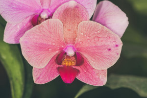

Orquídeas
São todas as plantas que compõem a família Orchidaceae, pertencente à ordem Asparagales, uma das maiores famílias de plantas existentes. Apresentam muitíssimas e variadas formas, cores e tamanhos e existem em todos os continentes, exceto na Antártida, predominando nas áreas tropicais. Não são plantas parasitas, nutrindo-se apenas de material em decomposição que cai das árvores e acumula-se ao emaranhar-se em suas raízes. Elas encontram muitas formas de reprodução: na natureza, principalmente pela dispersão das sementes, mas em cultivo pela divisão de touceiras, semeadura in-vitro ou meristemagem.
A respeito da enorme variedade de espécies, pouquíssimos são os casos em que se encontrou utilidade comercial para as orquídeas além do uso ornamental. Entre seus poucos usos, o único amplamente difundido é a produção de baunilha a partir dos frutos de algumas espécies do gênero Vanilla, mas mesmo este limitado pela produção de um composto artificial similar de custo muito inferior. Mesmo para ornamentação, apenas uma pequena parcela das espécies é utilizada, pois a grande maioria apresenta flores pequenas e folhagens pouco atrativas. Por outro lado, das espécies vistosas, os orquidicultores vêm obtendo milhares de diferentes híbridos de grande efeito e apelo comercial.
Apesar da grande maioria das espécies não serem vistosas, o formato intrigante de suas flores é muito atrativo aos aficcionados que prestam atenção às mini orquídeas. Como nenhuma outra família de plantas, as orquídeas despertam interesse em colecionadores que ajuntam-se em associações orquidófilas, presentes em grande parte das cidades por todo o mundo. Estas sociedades geralmente apresentam palestras frequentes e exposições de orquídeas periódicas, contribuindo muito para a difusão do interesse por estas plantas e induzindo os cultivadores profissionais a reproduzir artificialmente até espécies que poucos julgariam ter algum valor ornamental, contribuindo para diminuir a pressão sobre a coleta das plantas ainda presentes na natureza.
Flores
Dentre todas as famílias de plantas possivelmente as orquídeas é a família que apresenta maior espectro de variação floral. Geralmente apresentam flores hermafroditas mas, além destas, em alguns gêneros podem apresentar flores exclusivamente masculinas ou femininas.
O tamanho das flores varia de dois milímetros a mais de vinte centímetros. Suas cores vão de quase transparentes ao branco, com tons esverdeados, rosados ou azulados até cores intensas, amarelos, vermelhos ou púrpura escuro. Muitas flores são multicoloridas.
As flores normalmente apresentam simetria bilateral, com seis tépalas divididas em duas camadas, três externas chamadas sépalas e três internas denominadas pétalas. Tanto as sépalas como as pétalas são grandemente variáveis em formato e tamanho e podem ocasionalmente apresentar-se parcialmente ou inteiramente soldadas. A pétala inferior das orquídeas a que chamam labelo, sempre é diferenciada, ou expandida, podendo ser bastante simples e parecida com as outras pétalas ou apresentar calos, lamelas ou verrugas, formatos e tamanhos muito variados até bastante intrincados com cores diversas e contrastantes. Em muitos gêneros o labelo apresenta um prolongamento tubular oco ou um nectário próximo ao local em que se fixa à coluna, o qual recebe o nome de calcar. A observação das estruturas e padrões do labelo é uma das maneiras mais simples de reconhecer as diferentes espécies de orquídeas.
Os órgãos reprodutivos (androceu e gineceu) encontram-se reduzidos e fundidos em uma estrutura central chamada coluna, ginostêmio ou androstilo. O número de estames varia entre as subfamílias: Apostasioideae possui três; Cypripedioideae dois, com o estame central modificado; as demais apresentam apenas o estame central funcional, com os dois outros atrofiados ou ausentes. Também a observação das características da coluna ocupa posição importante na identificação das orquídeas.
Os grãos de pólen quase sempre encontram-se aglutinados em massas cerosas chamadas polínias, mas podem encontrar-se também agrupados em massa pastosa, ou rarissimamente soltos. As polínias ficam penduradas em uma haste chamada caudículo ou estipe, conforme sua estrutura, presas por um disco viscoso chamado viscídio, coladas por um líquido espesso secretado pelo rostelo. A maioria das espécies epífitas apresenta uma pequena capa recobrindo as polínias, denominada antera. O estigma é normalmente uma cavidade na coluna, onde as polínias são inseridas pelo agente polinizador. O ovário é ínfero, tricarpelar e possui até cerca de um milhão de óvulos.